अर्थशास्त्र (कक्षा 10) - अध्याय 5
उपभोक्ता अधिकार (Consumer Rights)
🛒 बाजार में उपभोक्ता और उत्पादक की दोहरी भूमिका
- उत्पादक (Producer): जो कृषि, उद्योग या सेवा क्षेत्र में वस्तुओं और सेवाओं का उत्पादन करते हैं।
- उपभोक्ता (Consumer): जो अपनी व्यक्तिगत आवश्यकताओं की पूर्ति के लिए बाजार से अंतिम वस्तुओं और सेवाओं को खरीदते हैं।
- उपभोक्ता की असहाय स्थिति: बाजार में जब उपभोक्ता व्यक्तिगत रूप से बिखरे होते हैं और उत्पादक बड़ी, शक्तिशाली बहुराष्ट्रीय कंपनियां या संगठित व्यापारी होते हैं, तो बाजार ठीक से काम नहीं करता और उपभोक्ता शोषण का शिकार हो जाते हैं।
⚠️ बाजार में उपभोक्ता शोषण के मुख्य रूप (Forms of Exploitation)
- कम तौलना या मापना (Underweight / Inaccurate Measurement): सही मानक से कम वजन का सामान देना या मीटर में हेराफेरी करना।
- मिलावट एवं घटिया माल (Adulteration & Substandard Goods): खाद्य पदार्थों में सस्ते व जहरीले रसायनों की मिलावट करना या एक्सपायरी डेट के बाद सामान बेचना।
- अधिक मूल्य वसूलना (Overcharging above MRP): पैकेज पर छपे अधिकतम खुदरा मूल्य (MRP) से ज्यादा पैसे वसूलना।
- भ्रामक व झूठे विज्ञापन (Misleading Advertisements): मीडिया और टीवी पर उत्पादों के झूठे दावे करके आकर्षित करना (जैसे- 'शिशु आहार दूध पाउडर मां के दूध से बेहतर है' - सिगरेट/तंबाकू के नुकसान छिपाना)।
- जमाखोरी एवं कालाबाजारी (Hoarding & Black Marketing): कृत्रिम अभाव पैदा कर ऊंची कीमतों पर बेचना।
- बिक्री के बाद सेवा से मुकरना (Denial of After-Sales Service): 'बिका हुआ माल वापस नहीं होगा' जैसी अनुचित व्यापारिक शर्तें थोपना।
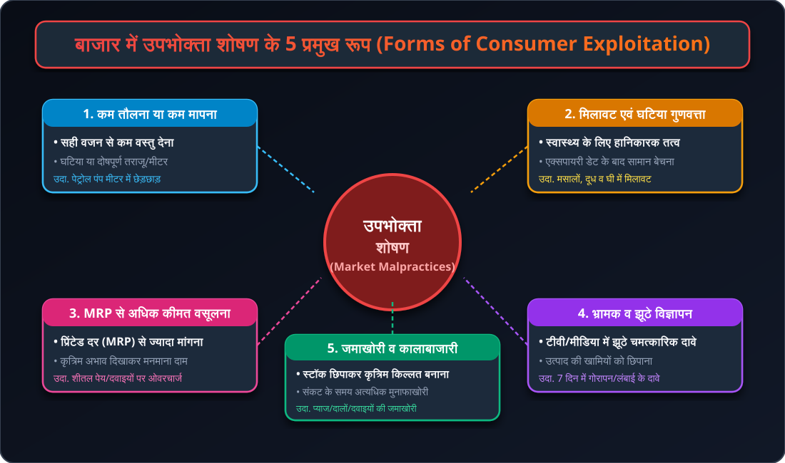
📊 चार्ट 5.1: उपभोक्ता शोषण के प्रमुख रूप (Forms of Exploitation)
कम तौलना, मिलावट, MRP से अधिक वसूली, भ्रामक विज्ञापन एवं कालाबाजारी का संपूर्ण वैचारिक मॉडल।
🛒 चित्र 5.1: आधुनिक बाजार में उपभोक्ता (Consumer in Modern Retail)
सुपरमार्केट में पैकेटबंद उत्पादों की सामग्री, एमआरपी और एक्सपायरी तिथि जांचते हुए जागरूक भारतीय उपभोक्ता।
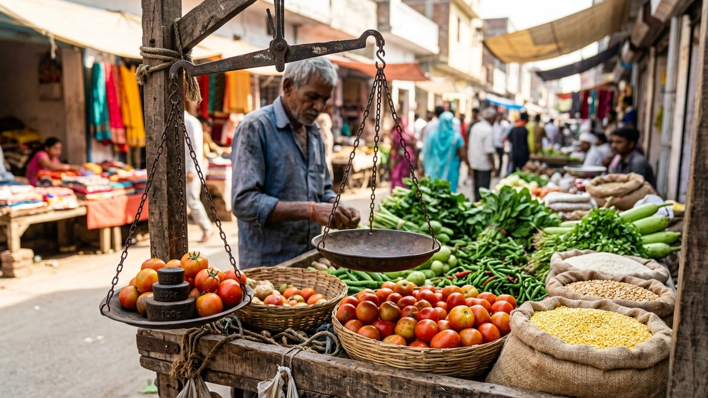
⚖️ चित्र 5.2: कम तौलने व मापने की समस्या (Underweight Malpractice)
दोषपूर्ण तराजू, चुंबक का अनुचित प्रयोग या छेड़छाड़ किए गए मीटर द्वारा उपभोक्ताओं का होने वाला नुकसान।
🔬 चित्र 5.3: मिलावट एवं घटिया माल (Food Adulteration Testing)
मसालों, दूध और खाद्य तेलों में हानिकारक रसायनों की मिलावट की पहचान करने वाली खाद्य सुरक्षा लैब।
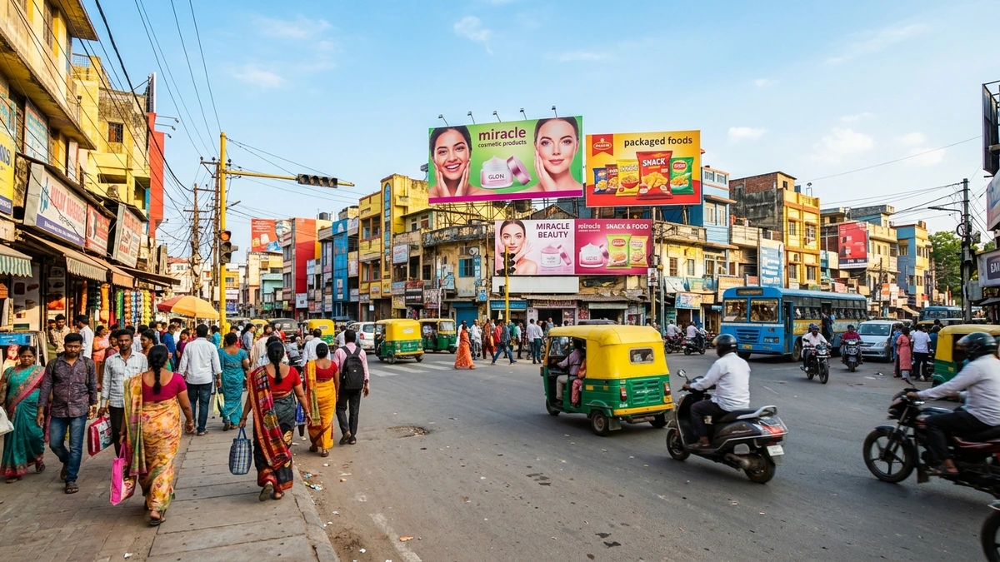
📺 चित्र 5.4: भ्रामक विज्ञापन एवं अतिशयोक्ति (Misleading Advertisements)
चमत्कारिक स्वास्थ्य लाभ और झूठे वादों द्वारा उपभोक्ताओं को भ्रमित करने वाले बड़े विज्ञापन होर्डिंग्स।
📢 उपभोक्ता आंदोलन का ऐतिहासिक विकास
- उत्पत्ति: भारत में उपभोक्ता आंदोलन का जन्म 1960 के दशक में खाद्य की भीषण कमी, जमाखोरी, कालाबाजारी और मिलावट के खिलाफ व्यापक असंतोष के रूप में हुआ।
- 1970 का दशक: उपभोक्ता संगठनों द्वारा प्रदर्शन, पत्रिकाओं में आलेख लेखन और उपभोक्ता समूहों का गठन किया गया।
- संसदीय कानून (1986): उपभोक्ता संगठनों के अनवरत संघर्ष के फलस्वरूप भारत सरकार ने 24 दिसंबर 1986 को 'उपभोक्ता संरक्षण अधिनियम 1986' (COPRA - Consumer Protection Act) पारित किया।
- राष्ट्रीय उपभोक्ता दिवस: भारत में प्रत्येक वर्ष 24 दिसंबर को 'राष्ट्रीय उपभोक्ता दिवस' के रूप में मनाया जाता है।
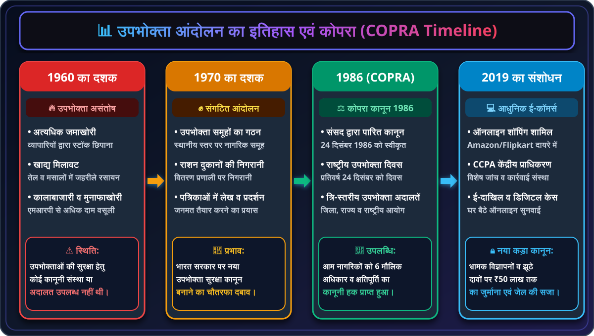
📊 चार्ट 5.2: उपभोक्ता आंदोलन का क्रमिक विकास (Consumer Movement Timeline)
1960s खाद्य असंतोष ➔ 1970s नागरिक समूह ➔ 1986 COPRA संसद पारित ➔ 2019 ई-कॉमर्स संशोधन।
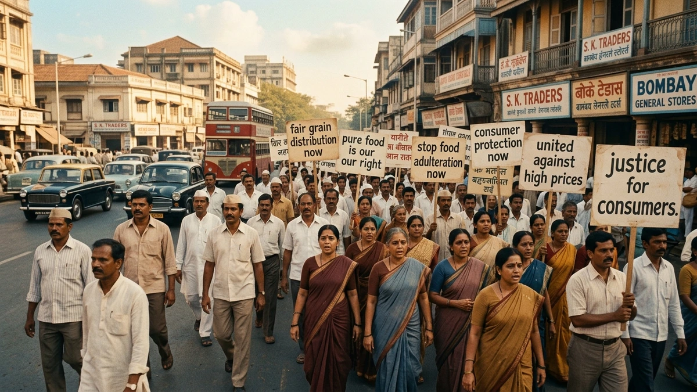
✊ चित्र 5.5: उपभोक्ता आंदोलन का ऐतिहासिक उद्भव (Historic Consumer Rally)
अनाज की कालाबाजारी और मिलावट के विरुद्ध 1970 के दशक में सड़कों पर उतरे जागरूक नागरिक व महिलाएं।
🏛️ चित्र 5.6: राष्ट्रीय उपभोक्ता दिवस - 24 दिसंबर (National Consumer Day)
'जागो ग्राहक जागो' अभियान और नागरिकों को उनके कानूनी अधिकारों के प्रति शिक्षित करने वाली राष्ट्रीय संगोष्ठी।
🛡️ कोपरा (COPRA) के 6 मौलिक अधिकार (Six Consumer Rights)
- 1. सुरक्षा का अधिकार (Right to Safety):
- उपभोक्ताओं को ऐसी वस्तुओं और सेवाओं से सुरक्षित रहने का अधिकार है जो जीवन और संपत्ति के लिए खतरनाक हैं।
- उदाहरण: प्रेशर कुकर में सुरक्षा वाल्व (Safety Valve) का त्रुटिरहित होना, बिजली के उपकरणों में शॉक-प्रूफ वायरिंग, एक्सपायरी डेट के बाद दवाइयां न बेचना।
- 2. सूचना पाने का अधिकार (Right to be Informed):
- वस्तु के निर्माण की तिथि, एक्सपायरी डेट, सामग्री (Ingredients), अधिकतम खुदरा मूल्य (MRP), बैच नंबर और उपभोग की विधि की पूर्ण जानकारी पाने का अधिकार।
- RTI अधिनियम (अक्टूबर 2005): नागरिकों को सभी सरकारी विभागों की कार्यप्रणाली की जानकारी पाने का भी कानूनी अधिकार मिला।
- 3. चुनने का अधिकार (Right to Choose):
- उपभोक्ता को किसी भी वस्तु या सेवा को अपनी पसंद से प्रतिस्पर्धी मूल्य पर चुनने की पूरी आजादी है। कोई दुकानदार किसी अन्य वस्तु को जबरन खरीदने के लिए बाध्य नहीं कर सकता (जैसे गैस कनेक्शन के साथ चूल्हा खरीदना अनिवार्य नहीं किया जा सकता)।
- 4. सुनवाई का अधिकार (Right to be Heard):
- उपभोक्ता के हितों और शिकायतों पर उचित मंचों और उपभोक्ता अदालतों में पूरी निष्पक्षता से विचार व सुनवाई का अधिकार।
- 5. क्षतिपूर्ति / निवारण का अधिकार (Right to Seek Redressal):
- दोषपूर्ण उत्पाद, घटिया सेवा या अनुचित व्यापारिक प्रथा से नुकसान होने पर उचित मुआवजा (Compensation), उत्पाद बदलने या पैसे वापस पाने का अधिकार।
- 6. उपभोक्ता शिक्षा का अधिकार (Right to Consumer Education):
- जीवन भर एक जागरूक और ज्ञानी उपभोक्ता बने रहने हेतु आवश्यक ज्ञान व कौशल प्राप्त करने का अधिकार।
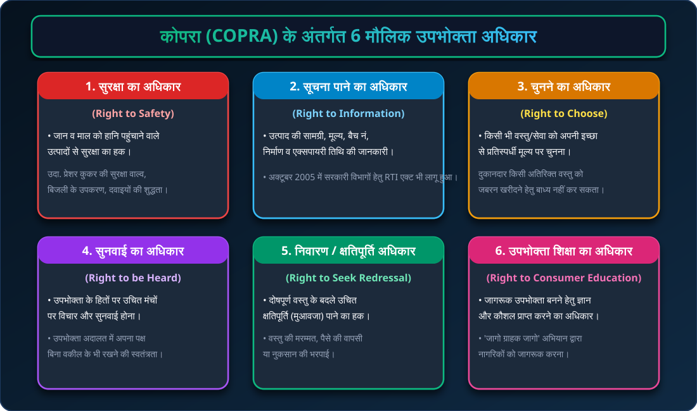
📊 चार्ट 5.4: 6 मौलिक उपभोक्ता अधिकार (Six Consumer Rights under COPRA)
सुरक्षा, सूचना (RTI), चयन, सुनवाई, क्षतिपूर्ति/निवारण एवं उपभोक्ता शिक्षा का विस्तृत वैधानिक ढांचा।
🛡️ चित्र 5.7: सुरक्षा का अधिकार (Right to Safety)
दोषपूर्ण सुरक्षा वाल्व के कारण होने वाले विस्फोटों से नागरिकों की जान-माल की सुरक्षा की गारंटी।
🏷️ चित्र 5.8: सूचना पाने का अधिकार (Right to be Informed)
उत्पाद की पैकेजिंग पर सामग्री, पोषण मूल्य, बैच नंबर और एक्सपायरी तिथि पढ़ने वाला जागरूक नागरिक।
📱 चित्र 5.9: चुनने का अधिकार (Right to Choose)
विभिन्न प्रतिस्पर्धी ब्रांड्स और मोबाइल सेवाओं में से अपनी इच्छा व बजट के अनुसार चयन की स्वतंत्रता।
📜 चित्र 5.10: RTI अधिनियम 2005 (Right to Information Act)
अक्टूबर 2005 में लागू सूचना का अधिकार कानून, जिसने सरकारी सेवाओं में पारदर्शिता व जवाबदेही सुनिश्चित की।
⚖️ त्रि-स्तरीय उपभोक्ता अदालत संरचना (Three-Tier Machinery)
COPRA के तहत उपभोक्ताओं को त्वरित और सस्ता न्याय दिलाने के लिए तीन स्तरों पर उपभोक्ता विवाद निवारण आयोग स्थापित किए गए हैं:
- 1. जिला उपभोक्ता आयोग (District Commission):
- क्षेत्राधिकार: ₹1 करोड़ तक के दावों के मामलों की सुनवाई (उपभोक्ता संरक्षण अधिनियम 2019 के नए नियमों के तहत)।
- प्रत्येक जिले में स्थापित। उपभोक्ता बिना वकील के सीधे सादे कागज पर या ऑनलाइन शिकायत दर्ज करा सकते हैं।
- 2. राज्य उपभोक्ता आयोग (State Commission):
- क्षेत्राधिकार: ₹1 करोड़ से अधिक और ₹10 करोड़ तक के दावों की सुनवाई।
- राज्य की राजधानी में स्थित। जिला आयोग के फैसलों के खिलाफ अपील की सुनवाई भी करता है।
- 3. राष्ट्रीय उपभोक्ता आयोग (National Commission - NCDRC):
- क्षेत्राधिकार: ₹10 करोड़ से अधिक के दावों की सुनवाई।
- नई दिल्ली में स्थित। राज्य आयोग के आदेशों के खिलाफ अपील सुनने का सर्वोच्च अधिकार (इसके फैसलों के खिलाफ सीधे सुप्रीम कोर्ट में अपील की जा सकती है)।
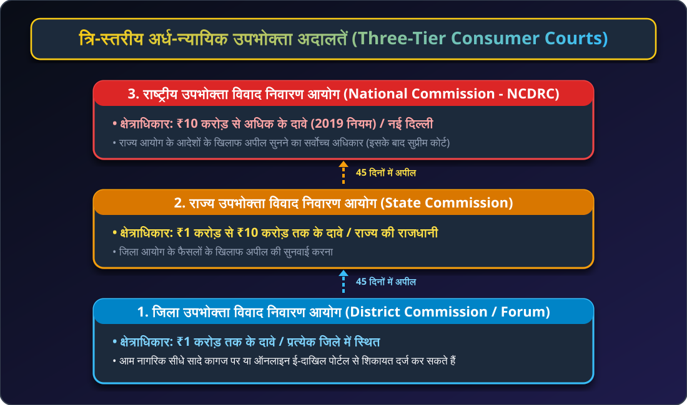
📊 चार्ट 5.3: त्रि-स्तरीय उपभोक्ता अदालतें (Three-Tier Redressal Machinery)
जिला आयोग (₹1 करोड़ तक) ➔ राज्य आयोग (₹1 से ₹10 करोड़) ➔ राष्ट्रीय आयोग (₹10 करोड़ से अधिक) एवं 45 दिन की अपील प्रक्रिया।
🏛️ चित्र 5.11: जिला उपभोक्ता अदालत (District Consumer Commission)
सरल प्रक्रिया, जहां बिना किसी भारी कानूनी फीस के आम नागरिक अपने शोषण के खिलाफ खुद पैरवी कर सकता है।
💰 चित्र 5.12: क्षतिपूर्ति व मुआवजा (Redressal & Compensation)
दोषपूर्ण वस्तु या अनुचित सेवा के बदले उपभोक्ता अदालत द्वारा पीड़ित को दिलाया गया कानूनी मुआवजा।
🏅 प्रमुख मानक प्रमाणन चिह्न (Standardization Marks in India)
- 1. ISI मार्क (Bureau of Indian Standards - BIS):
- औद्योगिक और इलेक्ट्रॉनिक उपकरणों की सुरक्षा व गुणवत्ता का प्रमाण।
- उत्पाद: एलपीजी सिलेंडर, बिजली के तार, गीजर, हेलमेट, सीमेंट, मिनरल वाटर।
- 2. एगमार्क (AGMARK - Agricultural Marketing):
- कृषि एवं खाद्य पदार्थों की शुद्धता व गुणवत्ता का सरकारी प्रमाण।
- उत्पाद: सरसों का तेल, मसाले, आटा, घी, दालें, शहद, मक्खन।
- 3. हॉलमार्क (HALLMARK - BIS Gold/Silver):
- सोने और चांदी के आभूषणों की शुद्धता का अनिवार्य प्रमाणन चिह्न।
- पहचान: 22 कैरट (916) सोने के गहनों पर लेजर से खुदा हॉलमार्क प्रतीक।
- 4. इको-मार्क (ECO-MARK):
- पर्यावरण-अनुकूल (Eco-friendly) उत्पादों हेतु मिट्टी का घड़ा (Earthen Pot) प्रतीक।
- उत्पाद: प्रदूषण-रहित साबुन, डिटर्जेंट, रिसाइकिल्ड कागज, पेंट्स आदि।
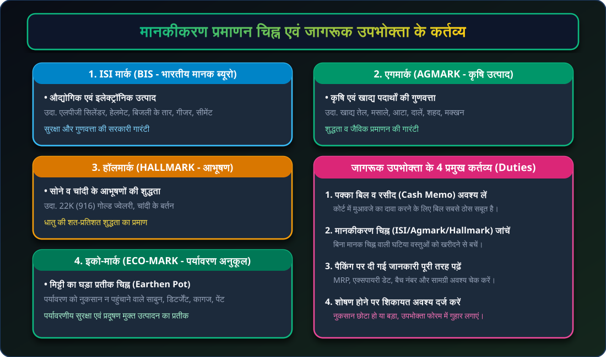
📊 चार्ट 5.5: मानकीकरण चिह्न व उपभोक्ता कर्तव्य (Standardization Marks & Duties)
ISI, AGMARK, HALLMARK, ECO-MARK के मानक एवं पक्का बिल लेने व शिकायत दर्ज करने के 4 कर्तव्य।
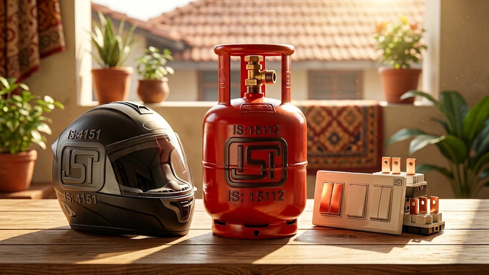
🛡️ चित्र 5.13: ISI मार्क (BIS Standard Mark)
एलपीजी सिलेंडर, हेलमेट और घरेलू बिजली उपकरणों पर गुणवत्ता और सुरक्षा का अनिवार्य सरकारी प्रतीक।
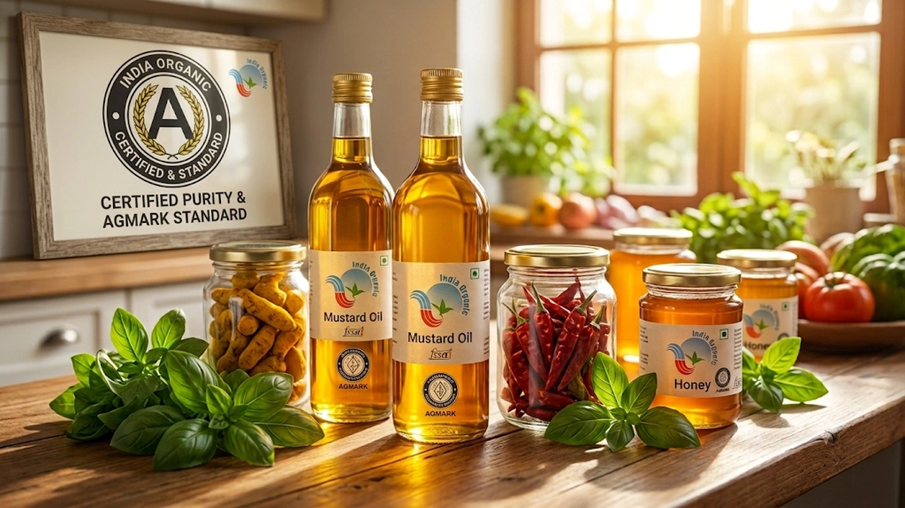
🌾 चित्र 5.14: एगमार्क (AGMARK Agricultural Mark)
खाद्य तेल, दालों, शहद और मसालों में शुद्धता व बिना मिलावट की गारंटी देने वाला सरकारी चिह्न।
💍 चित्र 5.15: बीआईएस हॉलमार्क (Gold & Silver Hallmark)
सोने व चांदी के गहनों की शत-प्रतिशत शुद्धता (22K / 916) प्रमाणित करने वाला लेजर हॉलमार्क।
🌱 चित्र 5.16: इको-मार्क (ECO-MARK Environmental Mark)
प्रदूषण मुक्त और पर्यावरण के अनुकूल निर्मित उत्पादों पर मिट्टी के घड़े का आधिकारिक प्रतीक चिह्न।
💡 जागरूक उपभोक्ता बनने के 4 प्रमुख कर्तव्य
- पक्का बिल व रसीद (Cash Memo) अवश्य लेना: बिना बिल के कोर्ट में दावा साबित नहीं किया जा सकता। रसीद खरीद का पक्का कानूनी सबूत है।
- मानकीकरण चिह्नों की जांच करना: हमेशा ISI, Agmark या Hallmark लगे प्रमाणित उत्पाद ही खरीदें।
- लेबल की संपूर्ण जानकारी पढ़ना: मूल्य (MRP), निर्माण तिथि, एक्सपायरी डेट, बैच नंबर और वजन की स्वयं जांच करें।
- शोषण होने पर चुप न बैठना: नुकसान चाहे ₹100 का हो या लाखों का, उपभोक्ता फोरम में शिकायत दर्ज कराएं ताकि अन्य नागरिक भी शोषण से बच सकें।
📱 उपभोक्ता संरक्षण अधिनियम 2019 के नए प्रावधान (Modern 2019 Act)
- ई-कॉमर्स और ऑनलाइन शॉपिंग: Amazon, Flipkart जैसी ऑनलाइन कंपनियों को सीधे कानून के दायरे में लाया गया।
- केंद्रीय उपभोक्ता संरक्षण प्राधिकरण (CCPA): भ्रामक विज्ञापनों और अनुचित व्यापार की जांच हेतु विशेष केंद्रीय संस्था बनाई गई।
- भ्रामक विज्ञापनों पर दंड: झूठे विज्ञापन करने वाली हस्तियों (Celebrities) और कंपनियों पर ₹50 लाख तक का जुर्माना और जेल की सजा का प्रावधान।
- ई-दाखिल पोर्टल: घर बैठे ऑनलाइन शिकायत दर्ज कराने और वीडियो कॉन्फ्रेंसिंग से सुनवाई की आधुनिक सुविधा।
🧾 चित्र 5.17: पक्का बिल व कैश मेमो (Demand for Cash Memo)
उपभोक्ता अदालत में शिकायत दर्ज करने और मुआवजा पाने के लिए सबसे अनिवार्य कानूनी प्रमाण।
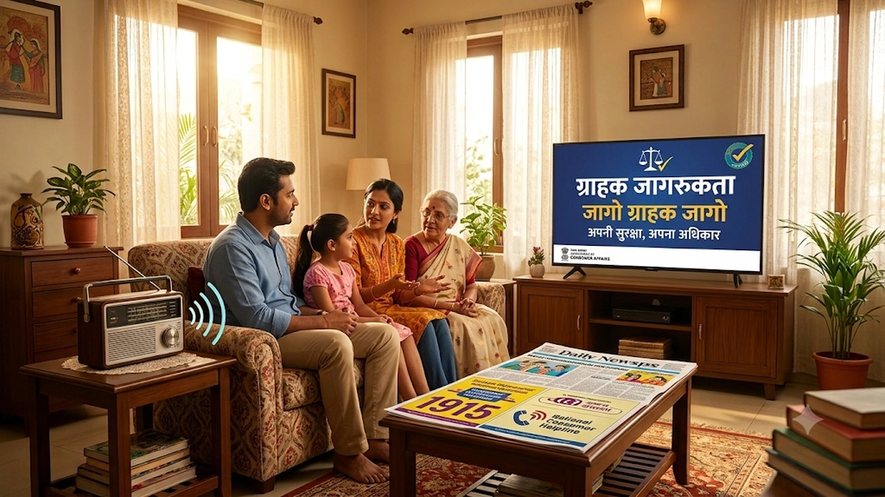
📢 चित्र 5.18: जागो ग्राहक जागो अभियान (Jago Grahak Jago)
रेडियो, टीवी और समाचार पत्रों के माध्यम से नागरिकों को जागरूक बनाने वाला राष्ट्रीय अभियान।
💻 चित्र 5.19: ई-कॉमर्स व ऑनलाइन उपभोक्ता सुरक्षा (E-Commerce Protection 2019)
ऑनलाइन मंगवाए गए गलत या टूटे उत्पाद की तुरंत वापसी और ई-दाखिल पोर्टल पर डिजिटल शिकायत।
🌟 चित्र 5.20: सशक्त जागरूक उपभोक्ता समाज (Empowered Consumer Society)
अधिकारों और कर्तव्यों के प्रति सचेत नागरिक समाज, जो निष्पक्ष और जवाबदेह बाजार का निर्माण करता है।
| प्रमुख विषय |
वैधानिक प्रावधान / संस्था |
उपभोक्ता के लिए महत्व व उदाहरण |
| कोपरा (COPRA 1986) |
24 दिसंबर 1986 को संसद द्वारा पारित उपभोक्ता संरक्षण अधिनियम। |
उपभोक्ताओं को 6 मौलिक अधिकार और कानूनी संरक्षण प्रदान करता है। |
| राष्ट्रीय उपभोक्ता दिवस |
प्रत्येक वर्ष 24 दिसंबर को पूरे भारत में मनाया जाता है। |
उपभोक्ता जागरूकता, सेमीनार और 'जागो ग्राहक जागो' अभियान। |
| जिला उपभोक्ता आयोग |
₹1 करोड़ तक के मामलों की सुनवाई करने वाली जिला स्तरीय अदालत। |
सादे कागज पर बिना वकील के त्वरित व सस्ती न्याय व्यवस्था। |
| राज्य उपभोक्ता आयोग |
₹1 करोड़ से ₹10 करोड़ तक के दावों की सुनवाई (राज्य राजधानी)। |
जिला आयोग के फैसलों के खिलाफ 45 दिनों में अपील की सुनवाई। |
| राष्ट्रीय आयोग (NCDRC) |
₹10 करोड़ से अधिक के दावों की सुनवाई (नई दिल्ली)। |
उपभोक्ता मामलों की शीर्ष अदालत; सुप्रीम कोर्ट में अंतिम अपील। |
| मानक चिह्न (ISI/Agmark) |
BIS और कृषि विपणन निदेशालय द्वारा जारी गुणवत्ता प्रमाण। |
सुरक्षा वाल्व, हेलमेट (ISI), तेल-मसाले (Agmark), सोना (Hallmark)। |